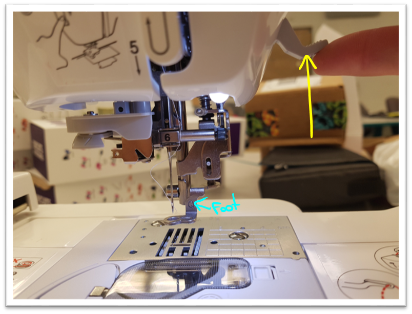
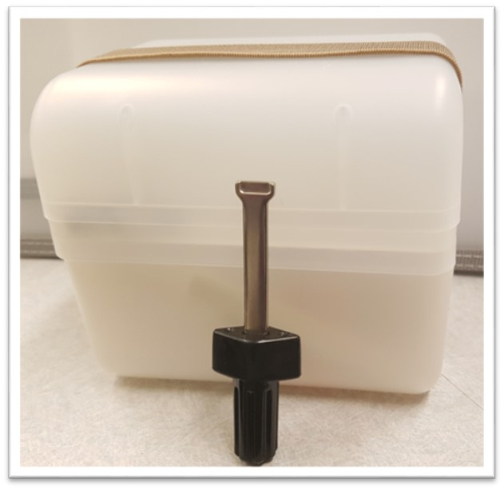
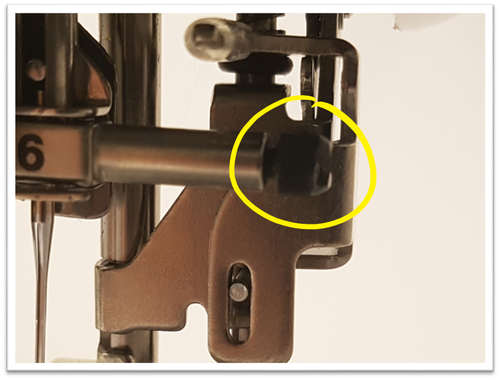
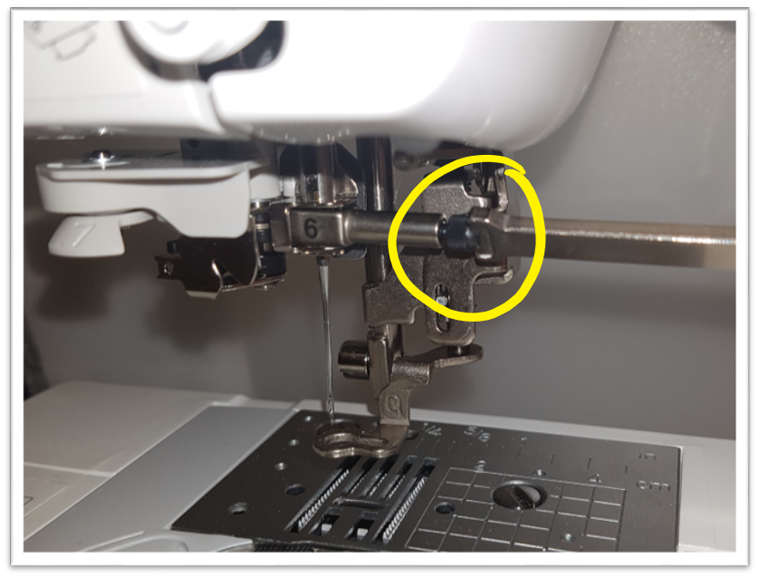
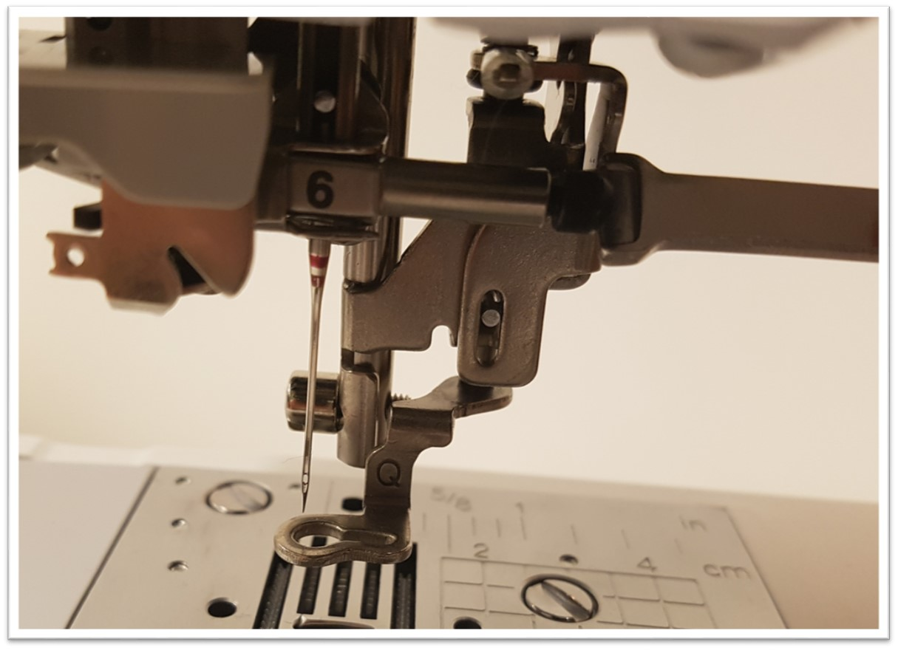

Embroidery
Table of contents
La broderie, c’est quoi ?
 La broderie est le procédé selon lequel du fil est cousu sur un tissu de manière à créer un motif ou une image.
Donc, une machine à broder vous permet d’écrire un texte mais aussi de dessiner des images, des logos, ou des insignes !
La broderie est le procédé selon lequel du fil est cousu sur un tissu de manière à créer un motif ou une image.
Donc, une machine à broder vous permet d’écrire un texte mais aussi de dessiner des images, des logos, ou des insignes !
La machine à broder ressemble beaucoup à la machine à coudre régulière. Mais en plus, elle possède un plateau amovible suivant les axes x et y ainsi qu’une aiguille automatique.
Elle ne peut broder (imprimer) qu’une couleur a la fois et le fil doit être remplacé à chaque fois que vous aurez envie de changer de couleur.
Conception d’un modele
Nous utilisons un logiciel appelé PE-DESIGN NEXT 9 pour créer les designs en broderie. Celui-ci se fait sur l’ordinateur connecté à la machine à broder.
-
Commencez par créer un nouveau fichier
 Changez le mode d’affichage en Realistique dans l’onglet « Affichage », ça vous facilitera la tâche !
Changez le mode d’affichage en Realistique dans l’onglet « Affichage », ça vous facilitera la tâche !

-
Vous pouvez aussi insérer des formes sur votre espace de travail (la case blanche au centre) en sélectionnant une forme puis en maintenant et en glissant le curseur pour dessiner la forme que vous désirez. Si vous n’arrivez pas à trouver le bouton « Formes », basculez vers l’onglet « Accueil ».

-
Changer les couleurs
Pour changer les couleurs, cliquez sur la forme puis dans l’onglet « Propriétés », puis cliquez sur la bobine et choisissez la couleur que vous voulez parmi celles sur le panneau latéral.

Notice : Assurez-vous que toutes vos couleurs sont cohérentes pendant tout le processus. (Par exemple, ne choisissez pas 3 différentes nuances de bleu si vous voulez un seul type de bleu pendant l’impression) Plus vous ajoutez des couleurs, plus le temps de broderie augmentera et vous devrez changer de bobine d’autant plus souvent.

-
Changer le motif de couture.
Vous pouvez aussi changer le motif de couture dans l’onglet attributs pour créer des effets différents.
 Ici, vous pouvez voir divers motifs de couture divers, et des motifs spécifiques pour les contours sont également disponibles.
Ici, vous pouvez voir divers motifs de couture divers, et des motifs spécifiques pour les contours sont également disponibles.

-
Optimiser l’Ordre de Broderie
Comme la machine à broder ne peut appliquer qu’une couleur là la fois, c’est important d’optimiser le fichier afin de finir coudre tout ce qui se rapporte à une couleur en une fois. Cela peut se faire en regroupant toutes les couches de la même couleur dans le panneau d’ordre de broderie à gauche.
 You can see that this order we have in the example is inefficient since you would need to take the black spool off and then put it back on later.
Vous pouvez voir que cet ordre qui apparait sur l’exemple est inefficace puisque cela nécessite que le fil noir soit enlevé et remis une nouvelle fois plus tard dans le procédé. Au lieu de cela, vous pouvez appliquez tout ce qui est noir en une seule fois, ce qui vous amènera à changer de bobine 3 fois au lieu de 4.
You can see that this order we have in the example is inefficient since you would need to take the black spool off and then put it back on later.
Vous pouvez voir que cet ordre qui apparait sur l’exemple est inefficace puisque cela nécessite que le fil noir soit enlevé et remis une nouvelle fois plus tard dans le procédé. Au lieu de cela, vous pouvez appliquez tout ce qui est noir en une seule fois, ce qui vous amènera à changer de bobine 3 fois au lieu de 4.
-
Finaliser
Sauvegardez votre création. Allez à l’onglet « Accueil ». Branchez votre machine a l’ordinateur. Envoyez votre design a la machine.

Utilizer la machine a broder: Brother HE240
Cette machine à broder est très pointilleuse et exige que tout soit parfait pour marcher proprement.
Précautions à prendre avant l’usage:
- Assurez-vous que vous utilisez une aiguille 75/11
- Assurez-vous que le fichier de la broderie est bien installé
- Assurez-vous que la bobine comporte bien du fil
- Assurez-vous qu’il n’y a rien qui bloque le trajet de la boucle
- Ne brodez pas quand il n’y a pas de fil
- Ne brodez pas quand il n’y a pas de tissu sur lequel coudre
- Soyez patient, mais surtout amusez-vous bien !
Operations checklist
Pour pouvoir mettre la machine en marche, vous devez le configurer en premier. Assurez-vous que :
- La machine est bien filetée, et le fil est inséré dans l’aiguille
- La bobine n’est pas vide
- Le pied-de-biche est abaissé
Allumer la machine
L’interrupteur se trouve sur le côté de la machine.
Un message apparaitra après que la machine soit allumée, appuyez sur OK.


Si la machine n’est pas encore filetée, ou est filetée avec la mauvaise couleur, suivez ces étapes pour remettre ou remplacer le fil.
There are two pre-steps that come before those numbered on the machine.
-
Insert the spool of thread into the long pin.

-
Place a spool cover on top of the spool. Make sure you use a spool cover that’s bigger than the spool.

-
Before threading, make sure the needle is in its highest position. If not you will have to adjust the height with the knob show on the right side of the machine.

Note: It is advised that you use thread meant for embroidery. It would say embroidery on the spool, this yields higher quality results.
Now we are using the steps that are on the machine.
-
Bring the string through the metal hook

- Continue bringing it underneath the plastic piece
 You can also see the visual guide on how to do this that is on the machine.
You can also see the visual guide on how to do this that is on the machine.
-
Pull the thread down the side of the machine into the slot.
 Now take the thread and wrap it around the thin plastic U shaped part, pulling it all the way up.
Now take the thread and wrap it around the thin plastic U shaped part, pulling it all the way up.

-
Keep pulling the thread up and then pull it toward the machine

-
Then pull the thread down, you will notice that it will latch onto the metal piece on the inside

-
Make sure the needle is in the highest position, then pull down the thread and latch it to the hook above the need labelled 6.

-
Then pass the thread underneath the metal piece show in the picture and around the plastic part labelled 7.

-
Almost done! Push down the lever, this should pass the thread through the needle. If it does not, you have to adjust the height of the needle using the knob on the side and try again.

-
Finally pull the string from the needle and cut off the excess length. (Leave about 10cm) That’s it for threading the machine!


Note: If the thread does not latch onto the metal piece, try again until it does
Note: Do not pull the string out of the needle, only the excess part to cut it off
Comment rembobiner.

Une machine à coudre a également besoin d’une alimentation de fil par le bas, sinon le fil ne se fixera pas quand la couture sera enclenchée. Vous pouvez voir sur la démonstration sur le côté l’importance du rôle de la bobine dans la broderie.
La bobine se trouve à la base de la machine et a besoin d’être réalimente a chaque fois que le fil s’épuise, sinon la machine ne pourra rien coudre.
Quand la bobine est vide, vous devrez suivre les étapes décrites dans la section fileter une bobine.

-
Take the lid off the bobbin as the diagram shows, then take out the spool of thread and remove any remaining thread from it.

-
Turn on the machine and place the spool on the top of the machine as shown.

-
Pass the thread under the hook then around the metal cylindrical part as shown.

- Then wrap the thread around the spool several times so it doesn’t come off or get loose. Make sure it is in this direction.

-
The start button (The one with the arrow) should now be yellow, press it and it will start winding the thread around the spool.
 Once it’s nearly full, press the yellow button again to stop it.
Once it’s nearly full, press the yellow button again to stop it.
-
Push the bobbin the other way as show and take it off the winder. Your bobbin is now refilled!

- Take the lid off the bobbin as you did before. Take the end of the thread
-
Take the end of the thread and place it under the plastic tab.

-
Then take the thread and loop it in around the plastic grove as shown.

-
Once done, put the cover back on and push it in.

Installer le plateau amovible
Détacher le cadre en plastique


- Tirez le levier en métal
- Tirez le cadre en plastique vers le haut pour le détacher
- Une fois détachée, presser le levier pour soulever le pied-de-biche
- Faites glisser le cerceau en plastique par-dessous le pied-de-biche
Ne déplacez pas le bras, cela peut abimer la machine.
Desserrez la vis jusqu’à ce que le cadre soit à moitié enlevé. Ne le desserrez pas complètement.
 Placez le feuillet stabilisateur sur la moitie inferieur du cadre avec la vis (cette étape est facultative, mais un stabilisateur augmente néanmoins la qualité du résultat et diminue les risques d’échec).
Placez le feuillet stabilisateur sur la moitie inferieur du cadre avec la vis (cette étape est facultative, mais un stabilisateur augmente néanmoins la qualité du résultat et diminue les risques d’échec).
 Placez le tissu à broder au-dessus, suivi par la moitie supérieure du cadre
Placez le tissu à broder au-dessus, suivi par la moitie supérieure du cadre
 NB : Assurez-vous que la flèche est au-dessus et ne pointe pas vers la vis. Si c’est le cas, changez l’orientation de la pièce supérieure. Appuyer sur la partie supérieure en plastique par les bords en tendant délicatement le tissu. Une fois que la pièce supérieure du cadre est complètement dedans, resserrez la vis.
NB : Assurez-vous que la flèche est au-dessus et ne pointe pas vers la vis. Si c’est le cas, changez l’orientation de la pièce supérieure. Appuyer sur la partie supérieure en plastique par les bords en tendant délicatement le tissu. Une fois que la pièce supérieure du cadre est complètement dedans, resserrez la vis.
 NB : Assurez-vous que le tissu est uniformément tendu de part et d’autre du cadre, et qu’il n’y a pas de plis. Si le pied-de-biche est abaisse, appuyez sur le levier pour le remonter.
NB : Assurez-vous que le tissu est uniformément tendu de part et d’autre du cadre, et qu’il n’y a pas de plis. Si le pied-de-biche est abaisse, appuyez sur le levier pour le remonter.
 Faites glisser le cadre sous le pied-de-biche
Faites glisser le cadre sous le pied-de-biche
 Placez le cadre dans le bras. Poussez-le jusqu’à ce que vous entendiez un click. Voila ! maintenant le plateau est prêt
Placez le cadre dans le bras. Poussez-le jusqu’à ce que vous entendiez un click. Voila ! maintenant le plateau est prêt


Télécharger un design dans la machine
Branchez le câble USB au dos de la machine et l’autre bout à votre ordinateur


Ouvrez votre fichier dans le logiciel PE-Design et allez à l’onglet accueil. Cliquez sur «Envoyer>Envoyer à votre machine», puis sélectionnez la première option dans la liste.

Préparer votre design
Cliquez sur l’icône qui indique l’ordinateur pour accéder aux designs que vous avez téléchargé depuis votre ordinateur
 Sélectionnez votre design sur l’écran
Sélectionnez votre design sur l’écran
 Appuyez sur l’icone en forme de pochette
Appuyez sur l’icone en forme de pochette
 Quand vous voyez apparaitre cet écran, cela veut dire que la broderie est prête à commencer
Quand vous voyez apparaitre cet écran, cela veut dire que la broderie est prête à commencer

Ajuster la taille et la position
Appuyez sur la touche Ajuster

Appuyez sur la touche Disposition

Changer la position

Changer la taille

Quand tous les ajustements sont faits, appuyez sur la touche retour jusqu’à ce que vous soyez revenu sur l’écran affichant votre design.


Broder votre design
Quand l’écran affiche le suivant, alors vous êtes prêts à commencer la broderie !

Faites descendre le levier pour abaisser le pied-de-biche

Le bouton « ↑ (Go) » doit maintenant être vert. Assurez-vous qu’il n’y a rien aux alentours de la machine qui pourrait interférer avec le processus et appuyez sur la touche ! la machine va maintenant broder !
Ne touchez pas la machine lorsqu’elle est en marche.
- L’aiguille est extrêmement pointue et bouge beaucoup
- Toutes les parties mécaniques de la machine sont en mouvement, et les toucher va faire échouer la broderie
Broderies multicolores
- Si votre conception comporte différentes couleurs, vous aurez besoin de fileter le fil supérieur avec la prochaine couleur et appuyer une nouvelle fois sur Go après avoir abaissé le pied-de-biche
- La machine affichera sur l’écran dans quelle ordre les couleurs seront brodées

Finaliser
-
Quand la broderie est terminée, la machine vous notifiera. Appuyez sur OK puis sur le bouton ou il y a les ciseaux


- Remontez le pied-de-biche
- Détachez le cadre de la machine
- Desserrez la vis supérieure du cadre et prenez votre tissu brode
Résolution des erreurs
Voici quelques erreurs communes qui pourraient survenir et comment les résoudre :
-
La machine affiche : « le fil de la bobine est épuisé »
- Si la bobine est vide : remplissez-la de nouveau
- Si la bobine est filetée : fileter-la
-
La machine affiche : « vérifiez et refileter la bobine supérieure »
- Si le porte bobine est vide : refileter la machine en bobine
- Si le porte bobine n’est pas vide : refileter la machine en
- L’aiguille se casse : remplacez l’aiguille
- Bring up the foot by pushing up on the lever. (Very important) 
- Use the screwdriver found in the machine’s part bin to loosen the black screw that’s show. 
-
Hold the needle with one hand and keep loosening the screw until you can pull the needle out. Make sure the needle does not fall into the machine.
 -
Now that the needle is out, you need to put in a new 75/11 embroidery needle. The flat end of the needle needs to be facing away from you when sliding it back up into the machine. (Same orientation as show in the image)

-
Now that the needle is out, you need to put in a new 75/11 embroidery needle. The flat end of the needle needs to be facing away from you when sliding it back up into the machine. (Same orientation as show in the image)
 - Make sure the needle cannot go up any further then tighten the screw.
Do not fully unscrew the screw and beware of sharp points from the needles. s